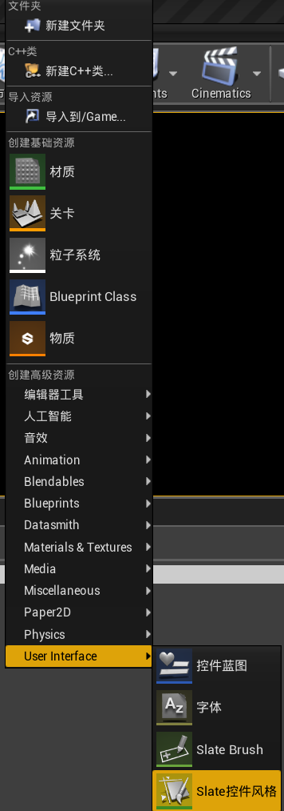
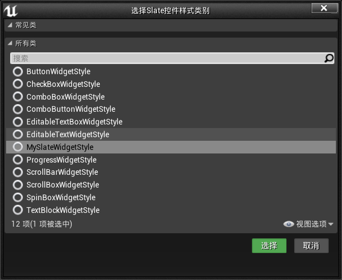
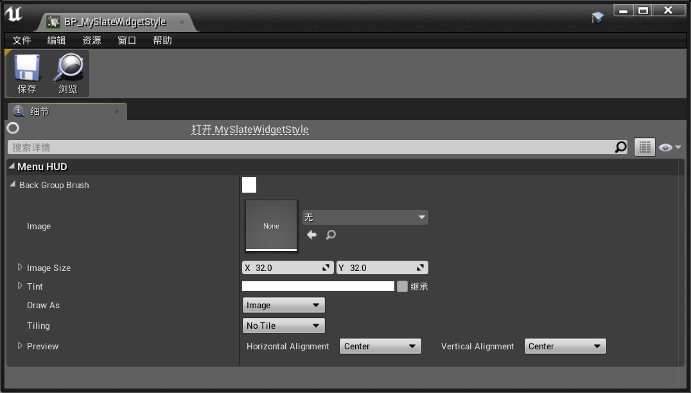
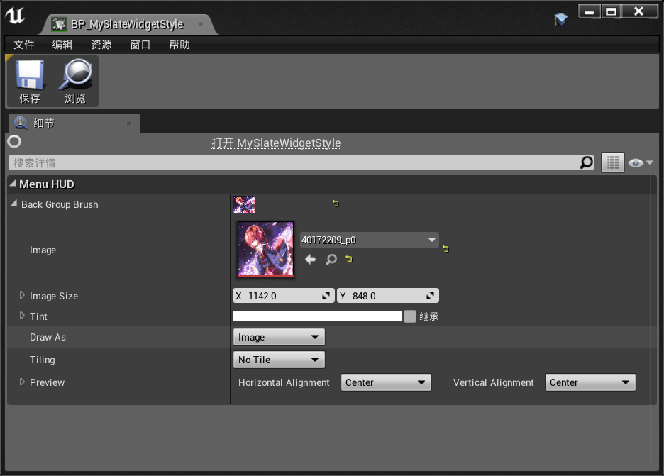
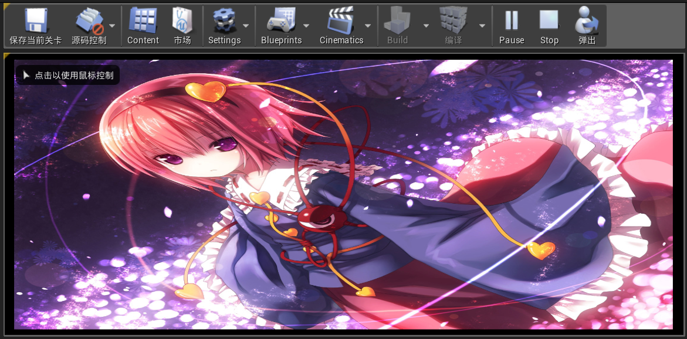

虚幻4之Slate学习二 —— Slate控件样式
内容简介
- 自定义控件样式
- 生成样式集合，用于加载和引用我们的样式
简单梳理
为了能够在控件上显示自定义的各类属性，使用我们要使用自定义的控件样式。使用我们需要创建一个基于SlateWidgetSytle的C++类。在这里可以定义许多的自定义样式。比如最常用的FSlateBrush用于显示图片，FSlateFontInfo用于表示字体信息。接着我们思考的是怎么指定这些相关属性，即怎么指定图片等信息。有两个方法，一是直接用硬编码，指定文件地址。二是转变成蓝图类，可视化选择我们指定的内容。使用现在的问题是如何让在不同地方的Slate控件能够获取获取到这些内容。这里的方法是写一个单例，并在GameModule中生成唯一实例以供调用。
定义自定义Slate控件样式
创建基于SlateWidgetStyle的C++类MySlateWidgetStyle，在UE4 Editor中的内容浏览器中创建自定义的控件样式蓝图，并选择样式为刚创建的C++类，命名为BP_MySlateWidgetStyle,具体操作如图:


可以测试一下是否成功,添加如下代码
/** MySlateWidgetStyle.h 部分代码 **/
#pragma once
#include "CoreMinimal.h"
#include "Styling/SlateWidgetStyle.h"
#include "SlateWidgetStyleContainerBase.h"
#include "SlateBrush.h"
#include "MySlateWidgetStyle.generated.h"
/**
*
*/
USTRUCT()
struct MYSLATE_API FMySlateStyle : public FSlateWidgetStyle
{
GENERATED_USTRUCT_BODY()
FMySlateStyle();
virtual ~FMySlateStyle();
// FSlateWidgetStyle
virtual void GetResources(TArray<const FSlateBrush*>& OutBrushes) const override;
static const FName TypeName;
virtual const FName GetTypeName() const override { return TypeName; };
static const FMySlateStyle& GetDefault();
//code needed to write
UPROPERTY(EditAnyWhere, Category = MenuHUD)
FSlateBrush BackGroupBrush;
};
这样在BP_MySlateWidgetStyle中产生如下效果

自定义单例类
接下来再来捋一下接下来的思路，我们需要在MyHUDWidget中获取到我们蓝图类中的样式。这里我们可以通过ISlateStyle::GetWidgetStyle。所以我们需要有一个ISlateStyle，这里我们可以通过得到FSlateStyleSet，它是继承于ISlateStyle的，可以直接隐式转换。接着我们FSlateGameResources::New函数来获取蓝图类中的所有样式生成FSlateStyleSet。而这一些列操作需要一个单列来实现，而单例也需要在某个地方实例化。
创建一个不继承任何类的类，命名为MyStyle。单例模式大同小异，可以按照如下进行模仿
/** MyStyle.h **/
#pragma once
#include "CoreMinimal.h"
#include "ISlateStyle.h"
/**
*
*/
class MYSLATE_API MyStyle
{
public:
static void Initialze();
static FName GetStyleSetName();
static void ShutDown();
static const ISlateStyle& Get();
private:
static TSharedRef<class FSlateStyleSet> Create();
static TSharedPtr<class FSlateStyleSet> MytyleInstance;
};
/** MyStyle.cpp **/
#include "MyStyle.h"
#include "SlateStyleRegistry.h"
#include "SlateGameResources.h"
//由于此单例不用构造函数，所以成员初始化写在这里
TSharedPtr<FSlateStyleSet> MyStyle::MyStyleInstance = NULL;
void MyStyle::Initialze()
{
if (!MyStyleInstance.IsValid())
{
MyStyleInstance = Create();
FSlateStyleRegistry::RegisterSlateStyle(*MyStyleInstance);
}
}
FName MyStyle::GetStyleSetName()
{
const static FName MyStyleName(TEXT("BP_MySlateWidgetStyle"));
return MyStyleName;
}
void MyStyle::ShutDown()
{
FSlateStyleRegistry::UnRegisterSlateStyle(*MyStyleInstance);
ensure(MyStyleInstance.IsUnique());
MyStyleInstance.Reset();
}
const ISlateStyle& MyStyle::Get()
{
return *MyStyleInstance;
}
TSharedRef<class FSlateStyleSet> MyStyle::Create()
{
TSharedRef<FSlateStyleSet> StyleRef = FSlateGameResources::New(GetStyleSetName(), "/Game/" , "/Game/");
return StyleRef;
}
注册和注销
- RegisterSlateStyle:Add a slate style to the repository.
- UnRegisterSlateStyle:Removes a slate style from the repository.
猜测:用于在 Static initialization时预加载我们需要的样式
FSlateStyleSet
- 一个Slate样式块，包含一组指定Slate外观的命名属性。
共享指针和共享引用
注意的是这两个都是指针，主要区别是TSharedRef<>不能指向空，且TSharedPtr<>可以隐式转换成TSharedRef<>，所有这里声明时用的是TSharedPtr<>
创建单例实例
- FDefaultGameModuleImpl中的StartupModule()和ShutdownModule()这两个函数会在加载(卸载)dll和模块后立刻调用,我们可以利用来生成实例。在MySlate中写如下代码:
/** MySlate.h **/ class FMySlateModule : public FDefaultGameModuleImpl { public: virtual void StartupModule() override; virtual void ShutdownModule() override; }; - FDefaultGameModuleImpl:Default minimal module class for gameplay modules. Does nothing at startup and shutdown.
- 所以上述其实就是自定义了一个模块
/** MySlate.cpp **/
#include "MySlate.h"
#include "Modules/ModuleManager.h"
#include "Public/UI/MyStyle.h"
#include "SlateStyleRegistry.h"
IMPLEMENT_PRIMARY_GAME_MODULE(FMySlateModule, MySlate, "MySlate" );
void FMySlateModule::StartupModule()
{
//先取消注册，保证不会重复注册
FSlateStyleRegistry::UnRegisterSlateStyle(MyStyle::GetStyleSetName());
MyStyle::Initialze();
}
void FMySlateModule::ShutdownModule()
{
MyStyle::ShutDown();
}
- 在您的游戏中，至少要使用IMPLEMENT_PRIMARY_GAME_MODULE注册一个模块。其他模块可以使用另一个可选的IMPLEMENT_GAME_MODULE方法进行注册。
- 所要使用的模组，注意默认是FDefaultGameModuleImpl,所以这里我们改为FMySlateModule
- 更多关于Module可以看官方手册
总结
这样我们就定义好了我们的控件样式，我们来测试一下是否成功，在样式蓝图中选择一张图片，并添加如下代码

/** SMyHUDWidget.h 部分代码**/
#include "MySlateWidgetStyle.h"
private:
const FMySlateStyle *MySlateStyle;
/** SMyHUDWidget.cpp **/
#include "SMyHUDWidget.h"
#include "SlateOptMacros.h"
#include "SButton.h"
#include "SImage.h"
#include "MyStyle.h"
BEGIN_SLATE_FUNCTION_BUILD_OPTIMIZATION
void SMyHUDWidget::Construct(const FArguments& InArgs)
{
MySlateStyle = &MyStyle::Get().GetWidgetStyle<FMySlateStyle>("BP_MySlateWidgetStyle");
ChildSlot
[
SNew(SImage)
.Image(&MySlateStyle->BackGroupBrush)
];
}
END_SLATE_FUNCTION_BUILD_OPTIMIZATION
- 注意MyStyle::Get()返回的是一个集合,所以我们需要使用GetWidgetStyle
(“BP_MySlateWidgetStyle”)来获取我们所定义的蓝图样式。
上述运行结果

相关链接
- 下章链接
虚幻4之Slate学习三 —— 创建Slate控件 - 章节总览
虚幻4之Slate学习
文章标题:虚幻4之Slate学习二 —— Slate控件样式
本文作者:Sanctorum003
发布时间:2019-08-03, 15:49:36
最后更新:2019-08-08, 14:38:12
原始链接:https://sanctorum.github.io/2019/08/03/WidgetStyle/版权声明: "署名-非商用-相同方式共享 4.0" 转载请保留原文链接及作者。